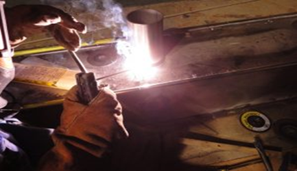
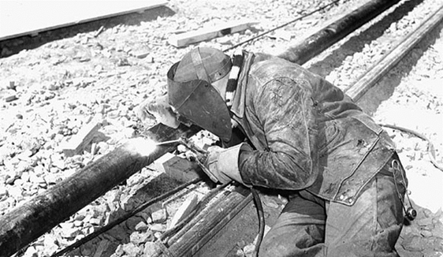
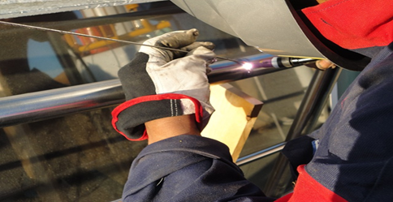

Menu
The history of welding

In the 19th century, main breakthroughs were made in welding. Scientists and engineers from the UK and the USA took an active part in advancing welding technologies.
Sir Humphry Davy, a famous British chemist and inventor, produced an arc between two carbon electrodes using a battery in 1800. His cousin, Edmund Davy, discovered acetylene in 1836.
In 1890 Charles L.Coffin, an American inventor, got the first US patent for an arch welding process using a metal electrode.
In 1900 Arthur Percy Strohmenger introduced a coated metal electrode in Great Britain. There was a thin coating of clay or lime, but it provided a more stable arc.
In about 1900, a torch suitable for low-pressure acetylene was invented.
The First World War made the countries develop weapons production and welding was in high demand. In America and in Europe many companies appeared to produce welding machines and electrodes.

In 1919 The American Welding Society as a non-profit organization was founded. The aim of the society was to advance welding and allied processes.
In 1920 automatic welding was introduced by The General Electric Company. It was used to build up motor shafts and cranes. It was also used by the automobile industry to produce rear axles.
During the 1920s various types of welding electrodes were developed.
In 1927 the heavy-coated electrodes were introduced by the A.O.Smith Company in America. The electrodes were made by extruding.
In 1929 the Lincoln Electric Company produced extruded electrode rods.

In 1930 covered electrodes were widely used.
The contribution of British and American inventors in the development of welding was great.